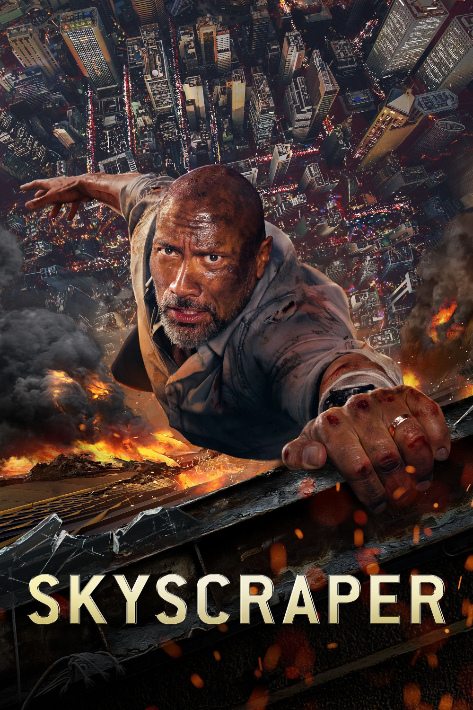

Мировая премьера: 13 июля 2018
Слоган: Храбрость не знает границ.
Сюжет: Бывший агент ФБР и ветеран войны Уилл Сойер ныне является экспертом по технике безопасности зданий. Ему поступает заказ проинспектировать самый высокий в мире и суперсовременный гонконгский небоскрёб. Но здание захватывают бандиты и устраивают в нём пожар, подставляя Уилла как виновника. Теперь ему придётся найти настоящих преступников, очистить своё имя и спасти семью, которая оказалась в ловушке на верхних этажах небоскрёба – выше линии огня.
Режиссёр: Роусон Маршалл Тёрбер
В ролях:
| Дуэйн Джонсон | Уилл Сойер |
| Нив Кэмпбелл | Сара Сойер |
| Чин Хань | Чжао Лон Дзи |
| Роланд Мёллер | Корес Бота |
| Пабло Шрайбер | Бен Гиллеспи |
| Байрон Манн | Инспектор Ву |
| МакКенна Робертс | Джорджия Сойер |
| Ноа Коттрелл | Генри Сойер |
| Ноа Тейлор | Мистер Пирс |
| Ханна Куинливан | Сия |
| Ци Ма | Начальник пожарной службы Шэн |
| Эльфина Люк | Сержант Хан |
| Адриан Холмс | Аджани Океке |
| Кевин Ранкин | Рэй Хатчинсон |
Бюджет: $ 125 млн.
Кассовые сборы в США: $ 68 млн.
Кассовые сборы в мире: $ 305 млн.
Продолжительность: 1 ч. 33 мин.
Рейтинг: 5.8